Разбор мобильной версии
Разбор мобильной версии kosmo-museum.ru и прототип нового сайта: что мешает посетителю и что поправить первым.
Главная · прототип
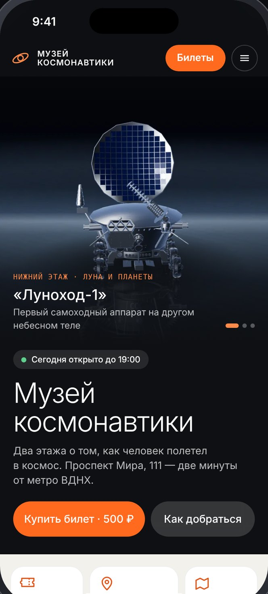
16 ноября 2026 · независимый концепт студии, не официальный материал музея
КТО ЗАХОДИТ НА САЙТ
01
Часы и адрес, билет на сегодня. Часто нужен английский.
02
Что интересно детям, сколько стоит на всех, какие льготы.
03
Заказать экскурсию, бесплатный вход московских школьников.
04
Экспонаты и залы, выставки и лекции.
Зачем приходят: купить билет, узнать часы и дорогу, понять, что посмотреть.
Аудитории — рабочая гипотеза. Проверить по Яндекс Метрике музея и короткому опросу на кассе.
ЧТО УЖЕ ХОРОШО
Сейчас идут выставки «Звезда Гая Северина», «Дни Дальнего Востока в Москве», работает планетарий.
На мобильной главной есть «Купить билет», «Пушкинская карта», «Музейная неделя», «Заказать экскурсию».
В шапке десктопа строка «Музей сегодня работает до 21:00» — правильная идея.
На Мосбилете вход по времени и все категории: взрослый 500 ₽, пенсионер 300 ₽.
Проверено на сайте и в кассе Мосбилета 14 ноября 2026.
ЧТО МЕШАЕТ НА ТЕЛЕФОНЕ
Телефон перебрасывает на отдельный сайт m.kosmo-museum.ru. В меню 9 пунктов, пункта «Билеты» среди них нет.
7 шагов и два сайта. Цен на странице «Стоимость билетов» нет — прейскурант лежит в PDF. Часы расходятся: на странице цен «Пн — закрыто», в графике на ноябрь понедельник рабочий.
Низ экрана закрывают cookie-баннер и плашка Мосбилета. Текст страницы цен набран моноширинным шрифтом.
13 одинаковых кнопок-картинок «Купить билет» подряд. На главной — карусель из 10 слайдов с кнопкой «Подробнее».
Мобильная главная весит ≈5,5 МБ, из них фото ≈5,2 МБ. Самое тяжёлое фото — 1,2 МБ.
Замеры 14.11.2026 в браузере, экран 390×844. Вес — по данным браузера о загруженных файлах; время загрузки на 4G не замеряли.
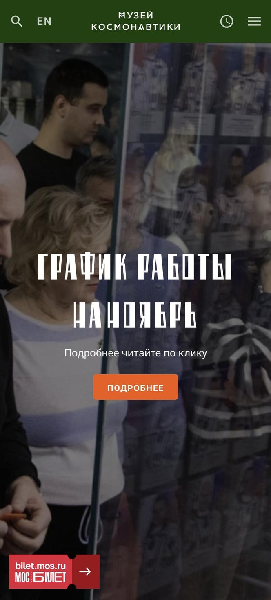
Баннер «График работы на ноябрь» и кнопка «Подробнее». «Купить билет» — ниже первого экрана, под каруселью из 10 слайдов.
Слайдер экспонатов: «Луноход-1», станция «Мир», «Марс-3». Под ним — «Сегодня открыто до 19:00», цена и кнопка «Купить билет».
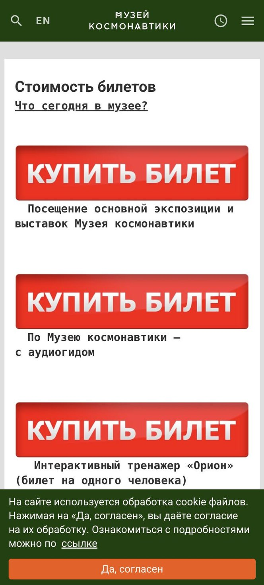
Страница длиной 7,5 экрана. Цен в тексте нет: прейскурант и льготы открываются PDF-файлами.
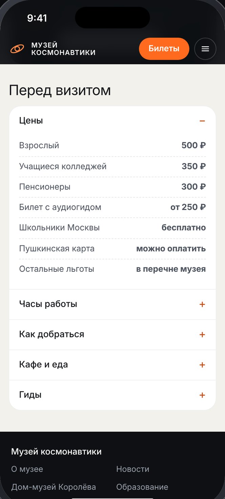
Взрослый 500 ₽, колледжи 350 ₽, пенсионеры 300 ₽, школьники Москвы бесплатно. Рядом часы работы.
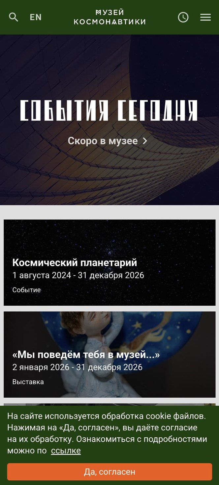
«События сегодня» — 6 карточек с датами вроде «1 августа 2024 – 31 декабря 2026». Нет фильтра, цены и записи.
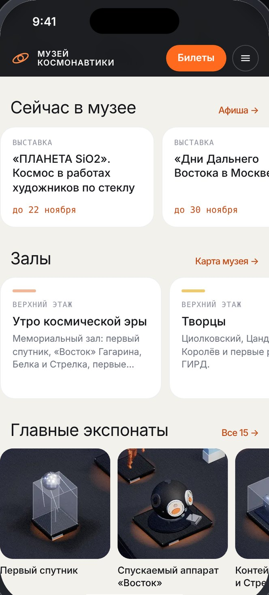
Выставки и события из афиши с понятной датой: «до 30 ноября», «до 7 февраля». Ссылка «Афиша» — к полному списку.
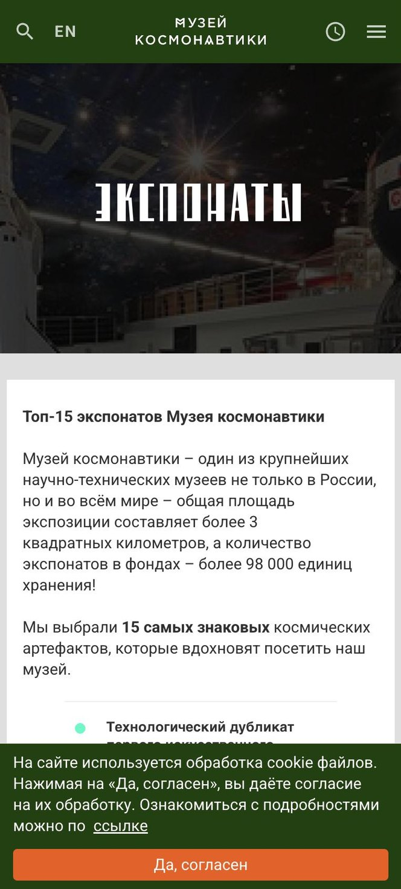
«Экспонаты» — одна статья «Топ-15». Нет поиска, фильтров и страниц экспонатов.
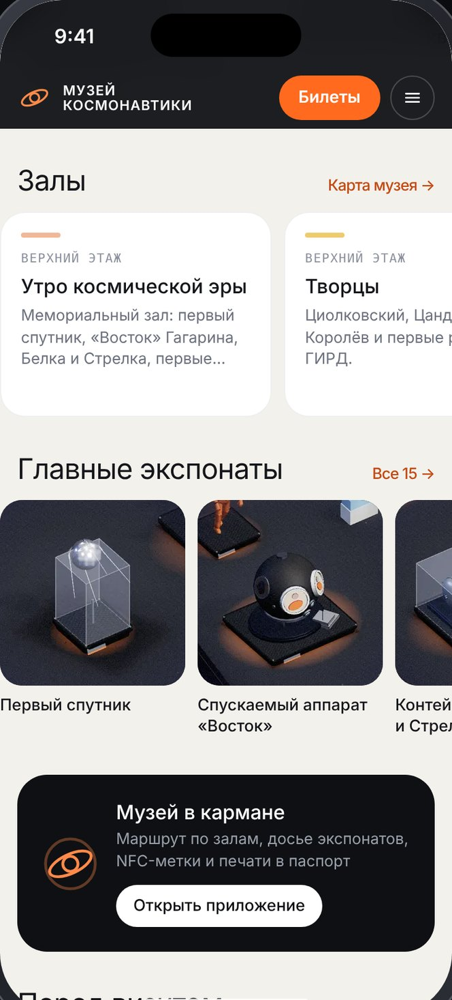
Залы по этажам и лента экспонатов. У каждого — своя карточка и место на карте.
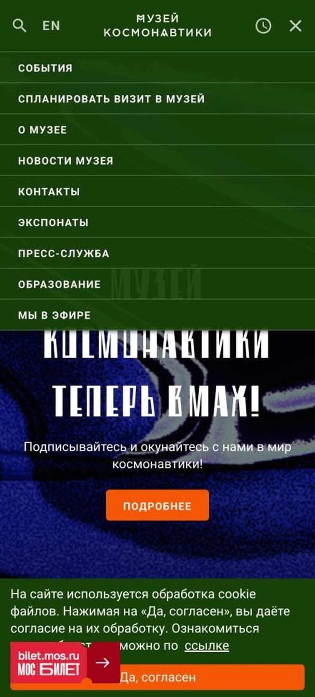
Телефон перебрасывает на отдельный сайт с меню из 9 пунктов: «Пресс-служба», «Мы в эфире». «Билетов» нет.
Один адаптивный сайт. Разделы названы по вопросам посетителя: «Как добраться», «Залы и карта».
7
ПУТЬ ДО БИЛЕТА · СЕЙЧАС
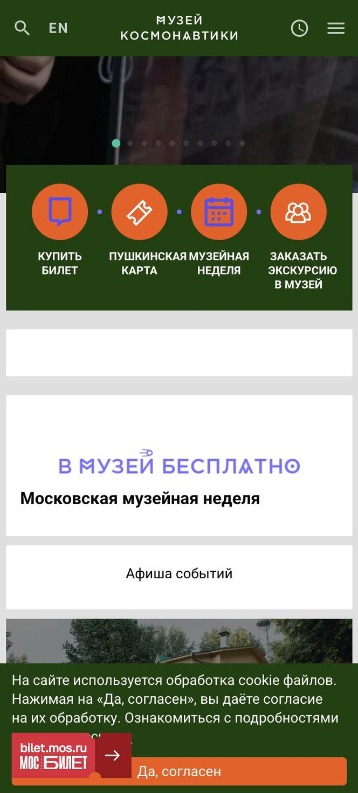
1 · Прокрутить главную до «Купить билет»
2 · Выбрать билет из 13 кнопок без цен
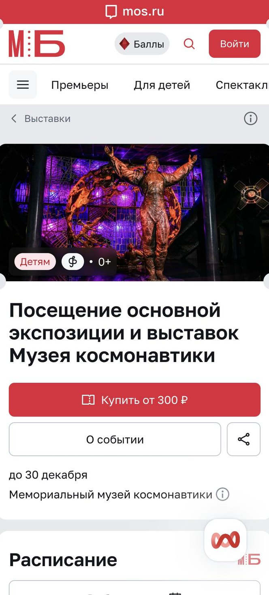
3 · На bilet.mos.ru — «Купить от 300 ₽»
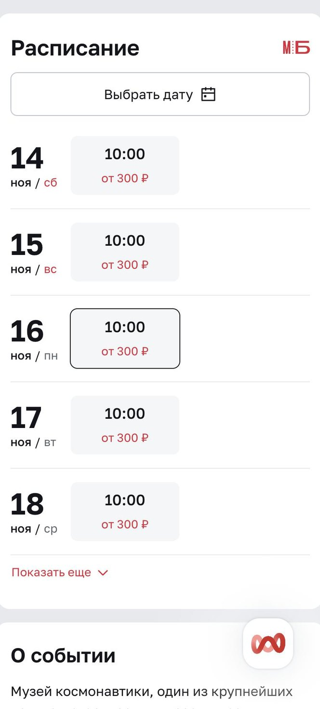
4 · Дата и время сеанса
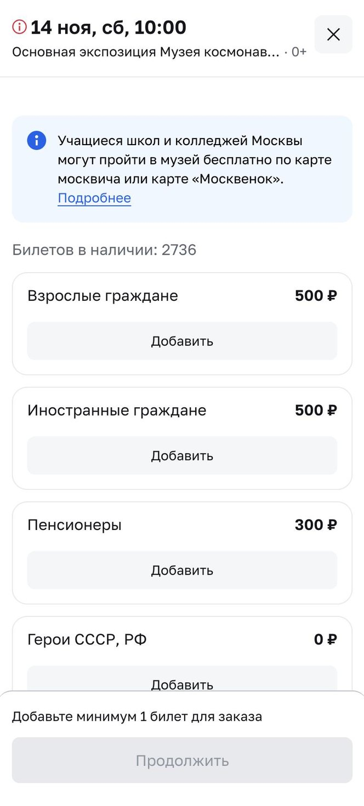
5 · Категория и «Продолжить»
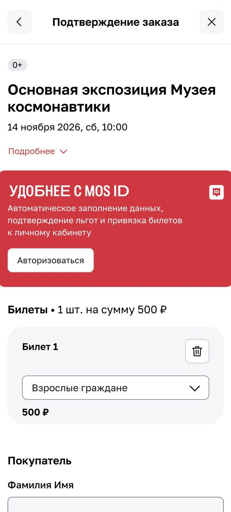
6–7 · ФИО, почта, телефон, два согласия, оплата
Пройдено 14.11.2026 до формы покупателя, без оплаты.
4
ПУТЬ ДО БИЛЕТА · ПРОТОТИП
старт · «Купить билет · 500 ₽» на первом экране
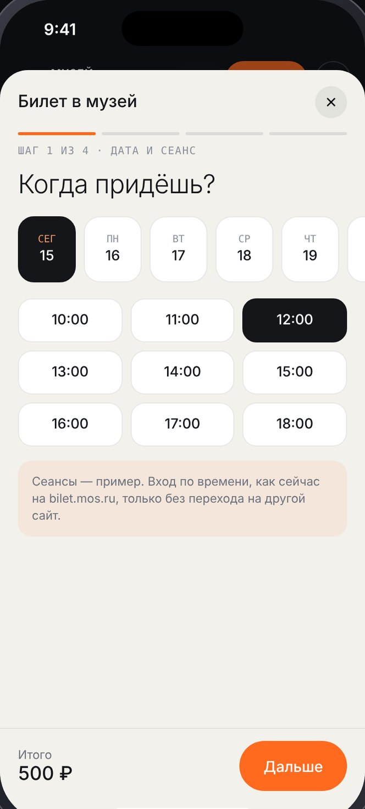
1 · Дата и сеанс
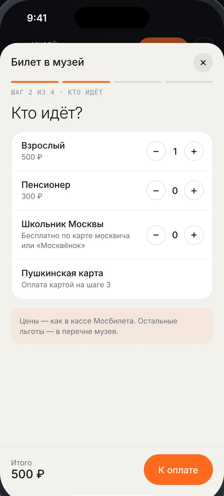
2 · Кто идёт и льготы
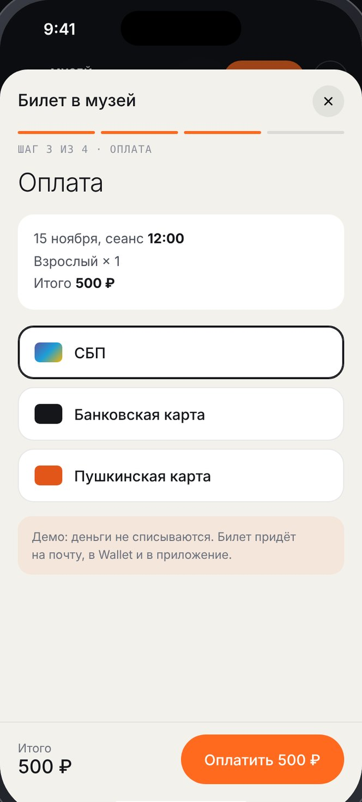
3 · Оплата: СБП, карта, Пушкинская
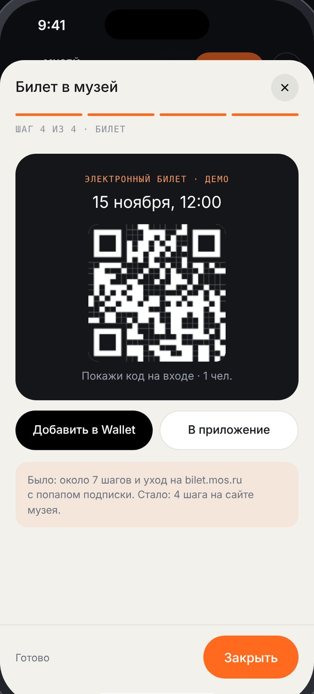
4 · Билет с QR, Wallet
Прототип — демо. Продажа на сайте возможна, только если у Мосбилета есть виджет или API.
ЧТО ДЕЛАТЬ
БЫСТРО · 1–2 НЕДЕЛИ
СРЕДНЕ · 1–2 МЕСЯЦА
БОЛЬШОЙ РЕДИЗАЙН · КВАРТАЛ
Сроки — оценка студии, уточняются после разговора с командой, которая ведёт сайт.
САЙТ И ПРИЛОЖЕНИЕ
01 · НА САЙТЕ
Блок «Музей в кармане» на главной, без экранов приложения на сайте.
02 · НА БИЛЕТЕ
Рядом с QR-кодом билета: билет и маршрут по залам в одном месте.
Само приложение «Музей в кармане» — в отдельной презентации.
КАК ПОЙМЁМ, ЧТО СТАЛО ЛУЧШЕ
| МЕТРИКА | КАК СЧИТАТЬ | СЕЙЧАС |
|---|---|---|
| Доля визитов с телефона | Яндекс Метрика, устройства | нужно от музея |
| Переход в кассу | Визиты с переходом на bilet.mos.ru ÷ все визиты, отдельно для телефона | нужно от музея |
| Шагов до билета | Проходим путь сами | 7 → 4 в прототипе |
| Время до билета | 5 человек покупают с телефона, засекаем | замерить |
| Вес главной | Браузер, экран 390 px | ≈5,5 МБ |
Цифры в колонке «Сейчас» — наши замеры 14.11.2026. Остальное появится после доступа к данным музея.